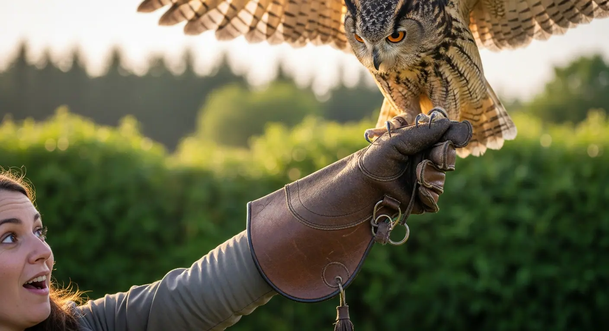

Most Popular
Beginner Sessions
Perfect for first-timers of all ages. Learn the basics of falconry, handle a bird of prey on the glove, and experience the thrill of a free-flight recall. No experience needed — just wonder.
- ✓ Duration: 1.5 – 2 hours
- ✓ All equipment provided
- ✓ Suitable for ages 8 and over
- ✓ Small groups for personal attention